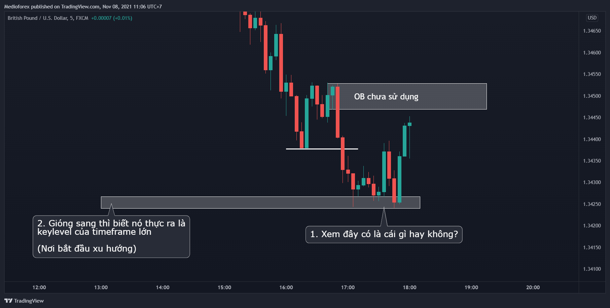

Chào mọi người. Bài này là những kinh nghiệm của mình về Order Block nên chả biết phải bắt đầu, kết thúc thế nào cho hay cả.
Thôi thì cứ đi thẳng vào vài trường hợp qua con mắt của mình rồi chúng ta cùng tổng kết, đúc rút lại qua từng trường hợp nhé. Mình nghĩ thực hành chính là cách học nhanh, dễ hiểu nhất.
Và để dễ theo dõi thì những trường hợp dưới đây, mình sẽ chỉ nói trên 1 timeframe duy nhất vì làm dạng bài viết mà nói nhiều timeframe chuyển liên tục thì sẽ khó theo dõi, chứ khi trade thì ngoài việc nhìn kỹ ở tf vào lệnh thì cần nhìn cả những timeframe khác nữa nhé.
Bắt đầu nhé
I. Trường hợp 1 (GU 05 / 11 / 2021)
Bối cảnh thị trường đang có:
- Thị trường đang trong 1 xu hướng giảm.
- Momentum giảm mạnh
Nhìn vậy thôi là đã muốn bán rồi. Mình có khối Order Block trùng với keylevel quan trọng. Thêm nữa khối OB này lại là khối OB chưa sử dụng. Rất tốt để vào lệnh vì tỉ lệ thắng sẽ cao.
Giờ muốn bán thì mình cần kiểm tra xem cái đáy sâu nhất đã chạm vào chỗ nào nhạy cảm hay chưa?

Kiểm tra thì thấy giá đã chạm nơi bắt đầu xu hướng trước đó (Cái này ae có thể xem lại biểu đồ nhé) Và như bình thường thì trường hợp này cần đợi giá phá hẳn xuống hoặc đảo chiều thì mới mua, bán được.
Nhưng giờ mình có thêm vũ khí mới là khối OB chưa sử dụng thì cứ thử cược giá giảm tiếp xem sao.
Vào lệnh bán tại khối OB
Kết quả
Cú đặt cược đã thất bại nhưng trường hợp này có quá nhiều cơ hội để quản lý lệnh. Hi vọng nếu ai vào lệnh kiểu như này thì chỉ hòa vốn mà không bị SL.
 Đó chính là thế mạnh của khối OB chưa sử dụng mà mình cho rằng là hay nhất - Đó là giúp chúng ta giảm thiểu việc bị SL khi phân tích sai.
Đó chính là thế mạnh của khối OB chưa sử dụng mà mình cho rằng là hay nhất - Đó là giúp chúng ta giảm thiểu việc bị SL khi phân tích sai.
Xem lại tổng quan thị trường thì giá đã về keylevel khung lớn (nơi bắt đầu xu hướng trước). Rồi phá keylevel quan trọng xu hướng giảm thì tìm cơ hội mua lên thôi.
OK dừng tại đây 1 chút để nói kỹ hơn nhớ. Đây là cách mình mình thay đổi so với trước đây.
Trước đây:
- Mình sẽ vào lệnh tại KLQT, KL fake, đỉnh cũ và TP lên trên. Thường mình chỉ vào lệnh tại KL fake hoặc KLQT và hay bỏ qua đỉnh cũ chấp nhận có thể lỡ kèo vì mình cũng chả biết cụ thể nó sẽ quay về đâu trước khi lên tiếp.
Hiện nay:
- Mình tìm 1 khối OB chưa sử dụng. Sau đó đặt lệnh và quản lý rủi ro của lệnh đó. Nếu bạn trade thì bạn cũng nhận ra khối OB đó nó hay trùng với đỉnh cũ hoặc KL fake, hoặc KLQT. Giờ thì đã có cơ sở hơn về việc giá sẽ về đâu rồi.
Có nghĩa dùng OB chưa sử dụng nó giúp mình có thêm 1 phần khả năng dự đoán chính xác hơn, thêm 1 lớp giáp, thêm 1 xác nhận, thêm 1 sự an toàn, lại còn giảm được khoảng cách SL. Nói chung là tốt và an toàn hơn trước.
Giờ thì lại quay trở lại biểu đồ.
1. Đầu tiên sẽ là cách đặt lệnh cũ của mình trong trường hợp này
Mình hay đặt lệnh tại KLQT cho an toàn. SL xa 1 chút cho đỡ bị stophunt. (GU M5 thì sẽ là 10-15 pips)
Đó cách vào lệnh bình thường trước đây. Và giờ là cách vào lệnh khi đã nâng cấp hơn.
2. Cách vào lệnh khi có thêm khối Order Block
Chỗ này thì mình vẫn cho rằng đi ngang chứ chả có đỉnh, đáy (swing high, swing low) nào cả. Kể cả dù bây giờ mình có cho rằng nó tạo thành swing high, swing low xong tạo được khối OB đi chăng nữa thì cũng chỉ toàn là khối OB đã sử dụng. Vì thế dù xác định kiểu nào thì cũng không xài được trong trường hợp này. Xét xuống tiếp nào.
Đủ điều kiện tạo thành khối OB rồi
Có OB chưa sử dụng. Rất tốt, lại ngay KLQT nữa.
Mình vào lệnh mua tại đây. Và TP đến điểm hợp lý.
Lệnh này đã TP.
Tổng kết:
- Nếu trade theo kiểu cũ thì lệnh này không khớp được. Mà kể cả khớp thì mình cũng chỉ lời khoảng ~4R.
- Trade dùng thêm OB chưa sử dụng thấy an toàn hơn. Khớp dễ hơn. RR lớn hơn ~7R (suýt gấp đôi)
Bonus
Mình còn vào được 1 lệnh con con (3,2R) nữa
Lệnh này thì mình lại:
- Không quan tâm cấu trúc thị trường
- Không quan tâm khung thời gian lớn
Gần như không quan tâm gì cả. Chỉ nhìn đúng như này và vào lệnh luôn thôi. Lệnh này mình đặt limit trước khi ngủ hơi hên xui vì không thể quản lý
Đây là trade kiểu ping pong chứ chả quan tâm cấu trúc gì cả nên RR không cao. Nếu đặt lệnh này giữa khối OB thì sẽ được khoảng 6R. Nhưng việc có RR lớn hơn thì sẽ phải đánh đổi với việc có thể bị lỡ kèo nên mình lựa chọn RR nhỏ hơn.
Trade kiểu ping pong là do trong quá trình mình backtest, học cách xác định, kiểm chứng khối OB chưa dùng thì mình mới phát sinh ra kiểu trade này.
Bạn có thể xem bài mình đã backtest ở dưới đây. Order Block - Học hỏi để hoàn hiện hơn
Mình trade kiểu này mỗi khi mình bí không thấy kèo. Cũng khá hay, nếu bạn muốn thử thì cần backtest nhiều nhé.
Kiểu trade này đơn giản là vào lệnh tại khối OB chưa sử dụng rồi TP đến khối OB chưa sử dụng chiều ngược lại hoặc TP đến chỗ nào mà có khả năng xảy ra đảo chiều gần nhất. Tuy đơn giản như vậy thôi nhưng hãy dành thời gian backtest ít nhất khoảng 2 tuần trước khi vào tài khoản thật nhé.
II. Trường hợp 2 (Gold 04/11/2021)
Bài này sẽ khá dài nên anh/chị/em chịu khó đọc chút nhé 
Bối cảnh hiện tại:

Xu hướng đang tăng thì giờ có 2 sự lựa chọn:
-
Một là mình mua, “đu” theo xu hướng tăng này nếu biết nó còn tăng tiếp.
-
Hai là mình đứng ngoài nếu không biết giá còn tăng được tiếp hay không.
Cái này quá quen thuộc rồi. Và để biết nó còn tăng tiếp hay không thì đơn giản xem đỉnh cao nhất nó có là cái gì hay không?
Với mình nó không là gì nên mình vẫn cho rằng giá sẽ tăng tiếp vì thế mình vẫn tìm kiếm cơ hội mua tại thời điểm này.
OK. Giờ lại tạm dừng để nói kỹ hơn về cái KHÔNG LÀ GÌ?
KHÔNG LÀ GÌ của phương pháp này nó sẽ là gì của phương pháp kia. Nếu bạn học SMC thì nó là Imbalance, hoặc phương pháp nào đó khác thì chỗ đó có thể lại là cái gì đó hay ho khác.
Nhưng mình không quan tâm. Với mình nếu không phải là KLQT, không phải nơi bắt đầu xu hướng, không phải khối Order Block chưa sử dụng (Cái này mới được thêm gần đây ) thì nó đều không là gì với mình.
Vậy có chắc chắn rằng trong trường hợp này, giá đến nơi KHÔNG LÀ GÌ của mình thì sẽ phải lên được tiếp không?
Tiếc rằng câu trả lời là: KHÔNG.
Làm sao mình dám khẳng định chắc chắn nó sẽ lên tiếp. Có thể giá sẽ đâm xuống rồi đảo chiều xu hướng.
Nếu giá xuống thật mà bảo mình giải thích trong trường hợp này thì mình chịu nhưng có thể bạn sẽ tìm thấy câu trả lời thỏa đáng bằng 1 cách giải thích khác. Nhưng rồi chắc chắn sẽ lại đến trường hợp mà cách giải thích đó lại không giải thích được nhưng bạn xem cách của mình thì lại giải thích được.
Thị trường không hoàn hảo nên điều đó không có gì là lạ. Thế nên khi mình dùng quy tắc của mình để trade thì mục tiêu mình chỉ muốn tạo ra lợi nhuận trên con đường dài, chứ không phải là không bao giờ SL. Đó là điều không thể làm được.
Và qua việc học thêm SMC thì mình cho thêm được “khối OB chưa sử dụng” vào bộ quy tắc KHÔNG LÀ GÌ của mình, giúp tỉ lệ thắng lên cao hơn nữa. Còn giá đến 1 vùng Imbalance thì vẫn có trường hợp xảy ra đảo chiều nhé. Nhưng với mình thì xác suất xảy ra không cao nên đến vùng Imbalance thì mình vẫn coi nó KHÔNG LÀ GÌ.
Nhưng hãy bỏ qua vụ đó vì giờ mình đã có thêm 1 vũ khí, thêm 1 lượt xác nhận, 1 lớp giáp trước khi lâm trận để tăng tỉ lệ thắng thêm 1 vài bậc nữa trong những trường hợp kiểu như này khiến cho việc kể cả có sai cũng hạn chế việc bị SL đi rất nhiều.
Giờ tiếp tục phân tích nhé
Xu hướng đang tăng. Mình dự đoán giá sẽ tăng tiếp và mình có như này
Rất quen thuộc. Và trước khi vào lệnh kiểu mới theo khối OB thì cách vào lệnh kiểu cũ của mình sẽ là
1. Vào lệnh kiểu cũ
Rất đơn giản là mình vào lệnh tại KL fake rồi TP lên trên thôi
Giá về KL fake nhưng không tăng tiếp mà chỉ lên được đỉnh cũ. Nếu chỉ đặt TP về đỉnh cũ thì đã TP. Còn nếu TP xa hơn thì lệnh này hoặc là lãi mỏng hoặc là hòa vốn.
Giờ nó đâm xuống phá KL fake như này thì tiếp theo có thể mình vào lệnh tiếp tại KLQT, cũng có thể mình không vào.
Đó là kiểu cũ khi chưa có thêm vũ khí. Giờ được trang bị thêm vũ khí thì mình đã vào lệnh như sau
2. Vào lệnh kiểu mới
Khi đã áp dụng thêm khối OB thì như mình nói ở bài trước. Mình chỉ vào lệnh tại khối OB chưa được sử dụng.
Khối OB đã sử dụng thì vẫn có thể vào lệnh được nhưng hiện tại mình không vào thường xuyên vì trade kiểu đó khó và dễ SL hơn. Mình đang luyện thêm ở khoản đó, khi nào mình lên được trình độ cao hơn ở cái đó thì mình sẽ lại hệ thống chia sẻ lại sau nhé.
Còn giờ thì cứ ưu tiên làm cái dễ trước. Đó là: CHỈ VÀO LỆNH TẠI KHỐI OB CHƯA SỬ DỤNG
OK giờ mình tìm khối OB chưa sử dụng. Mình tìm từ chỗ đoạn dưới chỗ KLQT trước nhé
Với mình thì đỉnh cao gần mình nhất (swing high) là cái (2) nhưng mình cứ liệt kê cả cái (1) vào vì kiểu gì trong trường hợp này đều chỉ có ra 1 kết quả thôi.
Giá cứ phá cấu trúc (BOS) là tạo ra khối Order Block rồi
Khối Order Block này là khối OB chưa sử dụng. Tuyệt vời.
Nhưng giá sau đó không xuống để sử dụng khối OB đó mà đi lên tiếp tục tạo được khối OB mới.
Mình cũng có thêm 1 khối OB chưa sử dụng. Ở trong trường hợp này thì ở chỗ KL fake lại không có khối OB nào cả. Giả sử nếu có đi chăng nữa thì cũng là khối OB đã dùng rồi - Không dùng lại được nữa.
Tổng kết trong trường hợp này nếu vào lệnh theo khối OB thì mình có thể vào lệnh tại 2 khối dưới đây
Hai khối OB này nó trùng với KLQT và đỉnh cũ. Trade theo OB thì KL fake ở trường hợp này lại không vào lệnh được.
Và nếu ae trade quen thì nhìn như vậy là biết thừa nên vào lệnh tại khối nào hơn rồi.
Câu trả lời tất nhiên là khối OB số 1 rồi, khối OB số 2 gần quá, giá chưa đi xa mà hồi về kiểu này cho cảm giác bất an.
Nhưng cứ thử vào lệnh tại khối OB số 2 xem sao nhé, vì theo lý thuyết vẫn vào lệnh được mà
Đặt lệnh và giá đã về khối OB số 2 này.
Đây là kết quả sau đó.
Lệnh này nhìn tưởng SL nhưng thực ra nếu vào thì chỉ bị hòa vốn thôi nhé.
(Đây là vấn đề số 1 mà mình sẽ nói ở cuối bài này)
Và giờ mới là lệnh mình đã vào. Nói dông dài từ đầu đến giờ thì mới tới lệnh mình đặt.
Mình đã vào lệnh tại khối OB chưa sử dụng 1 - Trùng với KLQT.
Giá chạy xuống gần về tới điểm đặt lệnh nhưng không xuống tiếp mà đi lên như này là mình biết mình bị lỡ kèo rồi
Thực chất giá đã chạm khối OB 1 chưa sử dụng của mình và đi lên rồi
(Tại sao lại vậy thì đây là vấn đề số 2 mà mình sẽ làm rõ ở cuối bài này)
Giá thực chất đã chạm khối OB rồi đi lên làm mình bị lỡ kèo thì giờ bắt buộc tìm cơ hội khác chứ biết sao giờ.
May mắn mình cũng tìm được cơ hội sau đó. Và đây là cơ hội thứ 2 mình tìm được.
Tổng kết mình có
- Trước đó giá đã chạm khối OB số 1 chưa sử dụng trước đó của mình.
- Sau đó giá tăng lên tạo thành cấu trúc tăng.
- Tạo thêm cả khối OB chưa sử dụng nữa
Vì thế mình vào lệnh luôn tại khối OB này
(Việc xác định khối OB này là vấn đề số 3 mà mình sẽ làm rõ ở cuối bài nhé)
Mình vào lệnh tại khối OB này
Kết quả
Đó là quá trình mình phân tích để vào lệnh.
Viết thì dài nhưng tổng kết lại vẫn là tìm khối OB chưa sử dụng và vào lệnh tại đó dựa trên cái gốc từ trước.
Tuy nhiên trong bài này mình có nêu ra 3 vấn đề trong quá trình trade gặp phải mà bây giờ mình sẽ làm rõ, mổ xẻ từng cái một.
Vấn đề số 1
Vào lệnh tại khối OB chưa sử dụng số 2 nhìn tưởng SL nhưng thực ra chỉ bị hòa vốn nếu hiểu và quản lý lệnh.
Bối cảnh hiện tại:
Giá giờ đã chạm điểm đặt lệnh thì giờ phải tìm nơi để có thể dời được SL.
Mình hay tìm bằng cách là mình thử thay đổi vị thế mua bán. Tức là thay vì mình tìm kiếm lệnh mua như ban đầu thì mình thử tìm kiếm lệnh bán ngược lại tại thời điểm này.
Nếu bán mình sẽ bán như trên. Điều ấy có nghĩa nếu mình mua như ở đầu thì mình cần dời SL khi giá chạm khối OB chưa sử dụng ở trên
Và đó là lý do lệnh này nếu quản lý thì chỉ bị hòa chứ không bị SL
Những trường hợp mà điểm cần dời SL nó sát như vậy thì cần phải theo dõi sát sao từng cây nến.
Nếu ai không có nhiều thời gian và dễ bị tâm lý thì những lệnh kiểu này tốt nhất không nên vào vì nó vừa cần nhiều thời gian theo dõi biểu đồ mà bản thân nó cũng xấu nữa.
Vấn đề số 2
Tại sao giá chưa chạm khối OB 1 mình đã vẽ mà mình lại bảo chạm rồi.
Bối cảnh thị trường:
Lý do bởi vì mình vẽ như này là chưa hoàn toàn chính xác.
Định nghĩa khối OB chính là vùng giá mà đó chính là nơi “giãy chết” cuối cùng của phe yếu thế. Và vùng giá đó hay được định nghĩa, xác định 1 cách đơn giản hơn là cây nến khác màu cuối cùng trước khi giá phá cấu trúc.
Nhưng không phải nó luôn luôn là vậy. Đôi khi vùng giá đó lại là 2 cây nến, có khi là 3, thậm chí còn nhiều hơn thế.
Hơi khó hiểu nhỉ, vào luôn biểu đồ để dễ hình dung nhé.
Xác định như vậy là đúng không sai, nhưng chưa chắc đã đủ.
Vùng giá mình xác định rộng hơn như trên vẫn đúng theo định nghĩa nhé.
Vậy qua đó mình có thể định nghĩa khối OB 1 cách nó chính xác hơn nữa đó là.
Khối Order Block là 1 hoặc nhiều cây nến khác màu cuối cùng liên tiếp nhau trước khi giá phá cấu trúc.
Quay trở lại biểu đồ thì mình có thể vẽ khối OB khách quan hơn như sau
Đó là lý do tại sao mình nói là giá đã chạm khối OB số 1 của mình rồi.
Có điều nếu vẽ to như trên thì nếu đặt lệnh sẽ không tối ưu được RR vì thế mình có thể vẽ bóp lại như ban đầu thì khi vào lệnh sẽ có tỉ lệ RR tối ưu hơn nhiều. Nhưng đi cùng với đó thì có thể sẽ lỡ kèo.
Đó là nhược điểm của việc cố gắng bóp khối OB thật nhỏ để có tỉ lệ RR lớn.
Nếu bạn xem người khác bóp khối OB thật nhỏ để có lệnh có tỉ lệ RR siêu khủng dù bằng cách xuống tf rất nhỏ hoặc vào lệnh ở giữa khối OB thì họ cũng phải lỡ vài kèo thì mới được 1 kèo như vậy. Vì thế hãy tự cân nhắc khả năng bị lỡ kèo và tỉ lệ RR trước khi đặt lệnh để không cảm thấy hối tiếc nhé.
Mẹo nhỏ
Nếu cây nến khác màu cuối cùng để vẽ khối OB nó bé tí ti như này thì hãy vẽ khối OB là 2 cây nến khác màu liên tiếp nhau cuối cùng cho khách quan và đỡ lỡ kèo hơn
Nếu cây nến khác màu cuối cùng để vẽ khối OB nó có độ lớn bình thường thì cứ vẽ khối OB bình thường là 1 cây nến khác màu cuối cùng là cũng được rồi.

Vấn đề 3
Vấn đề 3 là xác định khối OB mình đã xác định ở cuối bài.
Bối cảnh:
Đến đây chắc bạn thắc mắc tại sao mình không xác định khối OB như này đúng không?

Xác định như trên không có gì sai. Vào lệnh ở đó vẫn được. Nhưng với kinh nghiệm qua backtest rất nhiều lần của mình thì gặp trường hợp kiểu này thì khối OB ở dưới như mình xác định ban đầu nó luôn tốt hơn.
Trường hợp đó là nó như này
Vẽ như trên theo mình là chưa chính xác. Là mình thì mình sẽ vẽ khối OB như này
Vẽ như trên là vẽ theo định nghĩa gốc của khối OB. Với mình nó chính xác và an toàn hơn. Lý do bởi vì cái râu nến xanh đó cũng chính là nơi mà trước đó bên bán đã giãy chết, chính vì giãy chết nên mới tạo ra cái râu nến xanh đó.
Nói kiểu này khó hiểu nhỉ, vậy thì mình tách cái râu nến xanh đó thành 1 cây nến thì chắc sẽ dễ hiểu hơn
Tách như này chắc là ai cũng hiểu rồi. Đó chính là lý do mình vẽ khối OB trùm cả cái râu nến xanh đó.
Nếu bạn không muốn bóp khối OB lại thì cứ kẻ khối OB giống như trên còn nếu muốn bóp thì sẽ kẻ lại như này
Quay trở lại biểu đồ gốc thì mình sẽ kẻ được khối OB sau khi đã bóp như này
Và đó chính là lý do tại sao mình xác định khối OB như này
Đây gần giống như 1 mẹo nhỏ, 1 công thức. Kiểu như thấy cái râu nến xanh dài hơn cây nến đỏ đằng trước trong 1 cấu trúc tăng thì mình có thể kẻ được khối OB sau khi đã bóp chính là cái phần râu ở dưới luôn mà không cần phải xuống tf nhỏ để bóp.
Tổng kết
Đó là toàn bộ nội dung của bài ngày hôm nay.
Bài này chắc lập kỷ lục dài nhất của mình tính đến thời điểm này rồi.
Qua vài kinh nghiệm nhỏ bé của mình thì hi vọng anh chị em gặt hái được nhiều thành công. Mình sẽ cố gắng xem còn gì hay và mới để viết tiếp không. Và như thường lệ, chào các bạn, hẹn gặp mọi người ở bài tiếp theo